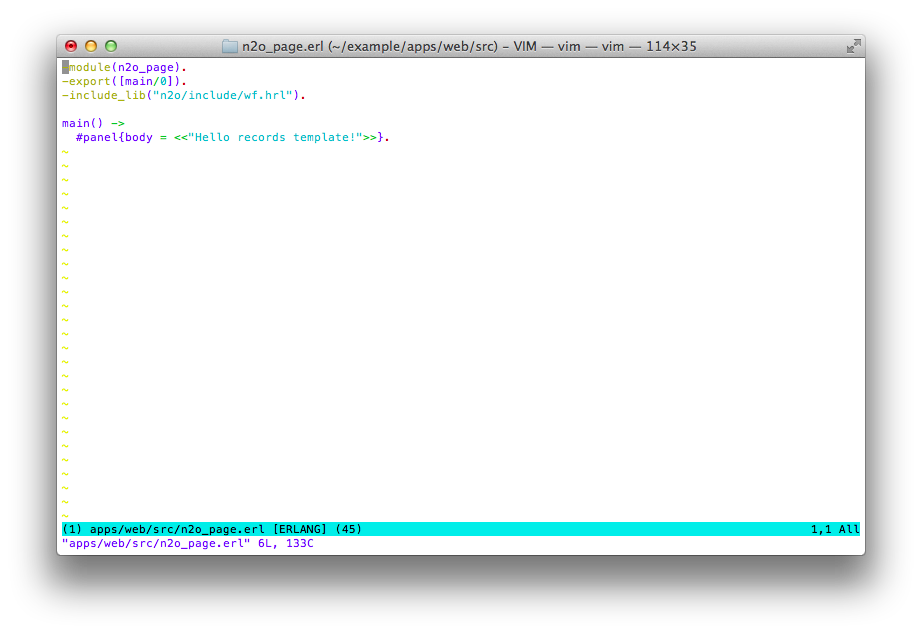
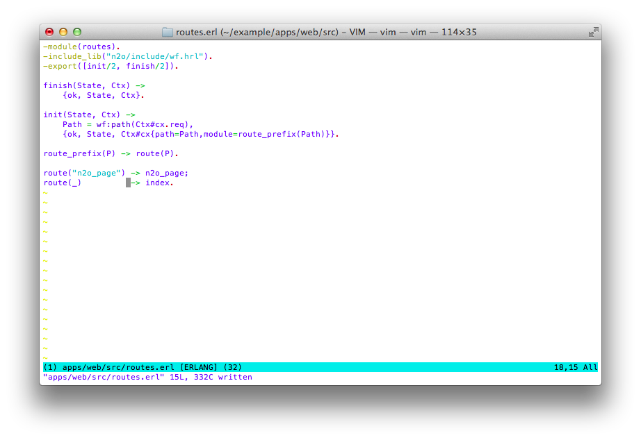
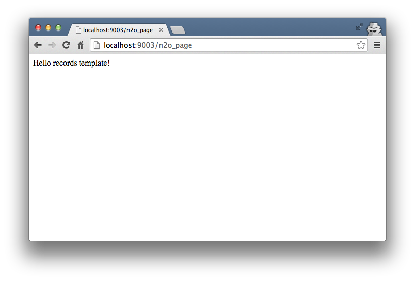

Sun 03 May 2020, tags: ErlangN2OTutorial
Re-posting from 2014-09-25
N2O template (Nitrogen) basically is a bunch of Erlang records compiled into HTML code. You can read more about templates at https://synrc.com/apps/n2o/doc/web/ page. Here we want to show how all steps of the page creation. It will be done in several steps:
- Create a view
- Add a route to the routes.erl file
Let's create a view
$ touch apps/web/src/n2o_page.erl
Open file in an editor and add required functions
$ vim apps/web/src/n2o_page.erl
-module(n2o_page). % module name
-export([main/0]). % function extraction
-include_lib("n2o/include/wf.hrl"). % include wf.hrl header file
main() -> % definition of default called function
#panel{body = <<"Hello records template!">>}.

Our first simplest view is ready. On the next step we should add the view to the routes.
Open routes.erl file and map path to the view
$ vim apps/web/src/routes.erl
route(<<"/n2o_page">>) -> n2o_page; % n2o_page view will be rendered by /n2o_page url route(_) -> index. % default view. '_' is matching any url

Ready. Let's compile the project and open in browser http://localhost:8002/n2o_page url.
$ ./rebar compile $ erl -name "web@$(hostname)" -pa deps/*/ebin -pa apps/*/ebin -boot start_sasl -s web_app start

Links
How to use Erlydtl templates read in the next part: N2O templates. Erlydtl
How to create a view with a static HTML page read in a previous article: N2O templates. Static HTML
Comments !